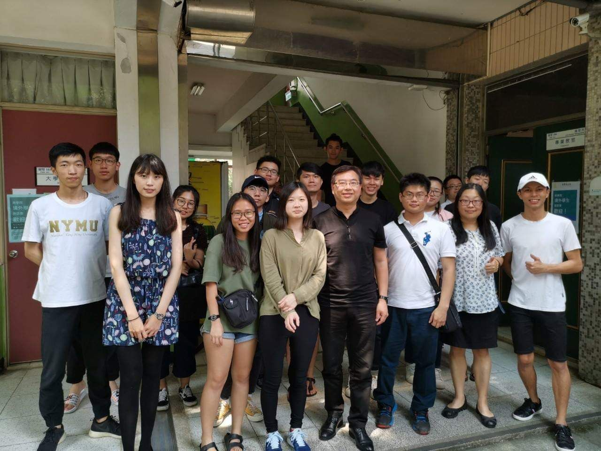

個人網站
自我介紹
學歷經歷
求職目標
自我期許
興趣
生活照
自我期許
內容:我其實是一位轉系生 從工業系轉到資管系一剛開始有點不適應因為發現資管的課程很多都要分組
我目前很多時間都是在補一年級的課程,在這一年的課程裡,同時修一二年級的課程 說實在有些辛苦且跟班上有些許的陌生(許多時間先去補一年級的課程)
所以對我而言除了本班外我也跟目前不同年級的人一起上課 有很多的課程等待著我去上期許自己未來的每一個學期 都能夠適應跟不同的班級上課
跟同學有良好的關係 課業穩固好 可以順利畢業

系上轉(學)生聚餐